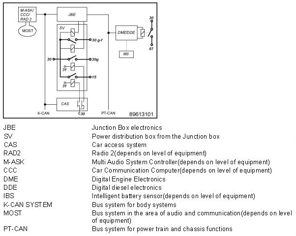

Energy Diagnosis: Terminal Control
Energy Diagnosis: Terminal Control
The terminal control is distributed across various control units. The following block diagram provides an overview of the control units involved and the integration in the vehicle electrical system.

Brief description
The power supply for the consumer units is delivered via various terminals. The terminal control is distributed across various control units.
Terminal 30: continuous positive
Terminal 30 is routed from the battery terminal via the safety battery terminal to the front power distribution box. As soon as the battery is connected to the terminals, terminal 30 is live. Terminal 30 is at approx. 40 fuses of the power distribution box.
Control units supplied by terminal 30:
AL Active steering (up to model year 03/2005)
AHM Trailer module (up to model year 03/2007)
CA Comfort Access (up to model year 09/2006)
CAS Car access system CDC
CD changer (up to model year 09/2004)
DME Digital Engine Electronics
DDE Digital diesel electronics
DWA Anti-theft alarm system
EGS Electronic transmission control (up to model year 03/2005)
EPS Electromechanical power steering
EKP Electric fuel pump (up to model year 03/2005)
FRM Footwell module
FZD Roof function centre
JBE Junction Box electronics
KOMBI Instrument panel (except for model year 09/2007 to model year 09/2009)
SH Auxiliary heating (up to model year 03/2005)
SMBF Passenger seat module (up to model year 09/2006)
SMFA Driver seat module (up to model year 09/2006)
SMG Sequential manual gearbox (up to model year 03/2005)
SZL Steering column switch cluster
Terminal 30 switched: Switched continuous +
Terminal 30g is controlled by the CAS. When the vehicle network is wakened by an operation of the user, terminal 30g is switched on. Terminal 30g is automatically switched off after a codable after-running period (e.g. 30 minutes). The after-running period starts with the event terminal R Off. As in the case of terminal 15, a relay in the power distribution box is activated by the CAS via a semiconductor switch. The relay of terminal 30g switches the battery voltage to approx. 18 fuses in the power distribution box.
Control units supplied by terminal 30g:
ACC Active cruise control
AL Active steering (as of model year 09/2005)
AMP Amplifiers
CDC CD changer (as of model year 12/2004)
CIC Car Information Computer
CID Central information display Combox Combox without telematics
CON Controller
CTM Convertible top module (E93)
CVM Convertible top module (E88)
DSC Dynamic stability control
DAB Digital tuner
DKG Twin-clutch gearbox
EGS Electronic transmission control (as of model year 09/2005)
EKPS Electric fuel pump (as of model year 09/2005)
GWS Gear selector switch
IHKA Integrated automatic heating / air-conditioning system
IHKR Integrated heating/air-conditioning regulation
IHR Integrated heater control
LDM Longitudinal dynamics management
RAD Radio
RAD2 Radio 2
RDC Tire Pressure Monitor
SDARS Satellite tuner
SH Auxiliary heating (as of model year 09/2005)
SHD Panorama glass roof (E91)
SMBF Passenger seat module (as of model year 03/2007)
SMFA Driver seat module (as of model year 03/2007)
SMG Sequential manual gearbox (as of model year 09/2005)
TCU Telematic Control Unit (except US version)
ULF Universal charging and hands-free facility
ULF-SBX Interface box
ULF-SBX-H Interface box High
VM Video module
VTG Transfer box
Closed-circuit current cutoff relay: Deactivation in the event of a fault:
Closed-circuit current cutoff relay is a terminal 30 that is only switched off if faults are detected.
Closed-circuit current cutoff relay only exists if a bistable relay is fitted. The relay is not visibly arranged in the power distribution box. As a rule the bi-stable relay is only installed with the IBS. For vehicles with CCC, M-ASK or auxiliary heater, such a relay is installed. For several equipment specifications with TCU, a bi-stable relay is also installed. For vehicles without closed-circuit current cutoff relay, the corresponding fuses are supplied with the terminal 30.
The JBE controls closed-circuit current cutoff relay via a bistable relay in the power distribution box. The bistable relay can be switched off or on. As a rule, the bi-stable relay is always switched on. The bistable relay has two relay coils and it always remains in the last state activated (switched on or switched off).
The following three faults exist in which closed-circuit current cutoff relay is switched off:
- Up to model year 09/2006:
1. As of approx. 60 minutes terminal R off, the DME/DDE starts a standby current measurement using the IBS. When the DME/DDE determines a standby current violation, this wakes up the vehicle and sends a message for cutoff of closed-circuit current cutoff relay. The JBE receives the message and switches the bistable relay off. Increased standby current due a switched-on auxiliary consumer unit is not a standby current violation for the DME/DDE. Nonetheless, closed-circuit current cutoff relay is switched off even if the startability limit is reached. The command for cutoff of closed-circuit current cutoff relay is also issued in this case by the DME/DDE.
2. As of terminal R off, the JBE monitors whether the vehicle is able to go into the rest state. The vehicle can only enter the rest state when all the control units are ready for this. If not all control units have signalled this readiness approx. 30 minutes, the JBE switches closed-circuit current cutoff relay off. The JBE also stores all the control units in the energy history memory that have not signalled readiness for the rest state.
3. A few minutes after terminal R off, the vehicle has normally switched into the rest state. As of the rest state, the JBE counts how often the vehicle is wakened. The JBE switches closed-circuit current cutoff relay off when a vehicle has been wakened unexpectedly more than 30 times with terminal R off. The JBE also stores the maximum number of waking events in the energy history memory.
- As of model year 03/2007:
1. If an IBS is fitted, the power management in the DME/DDE monitors the standby current and the battery condition. If the battery charge state is close to the starting capability limit, the vehicle is wakened and a message to reset or shut down closed-circuit current cutoff relay is sent. The JBE regulates the bi-stable relay accordingly.
2. If the vehicle is wakened too often after shutdown of terminal 30g, the JBE switches closed circuit current cutoff relay off for approx. 10 seconds (reset). If the vehicle is still wakened after the reset, closed-circuit current cutoff relay is switched off permanently until the next terminal change (shutdown).
3. If the vehicle does not go to sleep after shutdown of terminal 30g, the JBE switches closedcircuit current cutoff relay off for approx. 10 seconds (reset). If the vehicle still does not go to sleep after the reset, closed-circuit current cutoff relay is switched off permanently until the next terminal change (shutdown).
In all cases of cutoff, a fault is entered in the JBE. The cutoff of closed-circuit current cutoff relay is independent of what triggered the detected fault. The cutoff is only an attempt to remedy the fault in the vehicle and prevent it from not starting. The cutoff of closed-circuit current cutoff relay does not necessarily mean that there was a fault in a consumer unit of closed-circuit current cutoff relay.
The switch-on condition for closed-circuit current cutoff relay is switching on terminal R. For this reason, with terminal R or terminal 15, closed-circuit current cutoff relay is always switched on.
Control units supplied by closed-circuit current cutoff relay:
AHM Trailer module (as of model year 09/2007)
CA Comfort Access (as of model year 03/2007)
CCC Car Communication Computer
CNAV Navigation system China Combox Combox with telematics
JNAV Japan navigation system
KNAV Navigation system Korea
KOMBI Instrument panel (model year 09/2007 to 03/2009)
M-ASK Multi audio system controller
TCU Telematic Control Unit (only US version)
Terminal 15
Control of terminal 15 is by the CAS depending on operation of the START/STOP button (with the key inserted in the key slot). The gearshift mechanism of terminal 15 is switched in the CAS via semiconductor switch. A relay in the power distribution box is activated via the output of a semiconductor switch. The relay switches the voltage of the battery to approx. 7 fuses in the power distribution box. The consumer units of terminal 15 are essentially supplied from here.
Control unit supplied by terminal 15:
FLA High-beam assistant
PDC Park distance control
TRSVC All-round vision camera (E84)
For safety reasons, some control units have a terminal 15 line directly from CAS, e.g. the FRM (footwell module).
Terminal R
Terminal R is not present as a hardware terminal. The status of terminal R is only communicated from CAS via the bus systems.
MRS5 Multiple restraint system
Terminal 87
The DME/DDE controls terminal 87 via a relay in the E-box. Terminal 87 is switched on as soon as terminal 15 is switched on. After terminal 15 has been switched off, terminal 87 is switched off by the DME/DDE with a slight delay.
No control units are supplied by terminal 87.